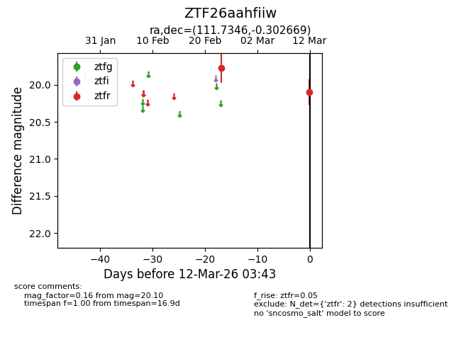
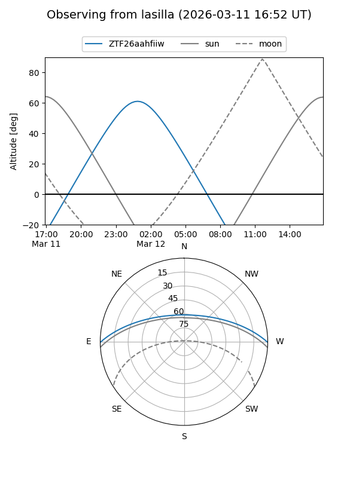
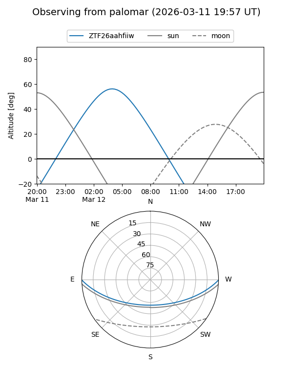

ZTF26aahfiiw
Target ZTF26aahfiiw at 2026-03-12 03:44
Aliases and brokers:
FINK: link
Lasair: link
ALeRCE: link
alt names
ZTF26aahfiiw (ztf,fink_ztf)
Coordinates:
equatorial (ra, dec) = 111.7346,-0.30267
equatorial (HMS+DMS) = 07:26:56.30,-00:18:09.61
galactic (l, b) = (217.2758,+7.75271)
Flags:
Photometry:
last ztfr=20.10
2 ztfr detections
Lightcurve

Visibility


Additional plots